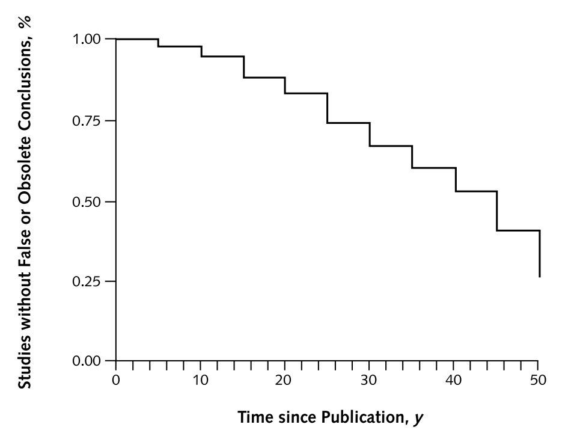
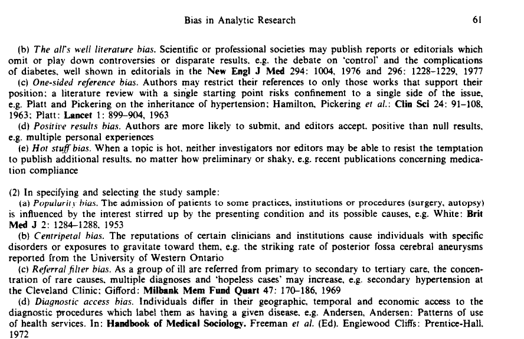
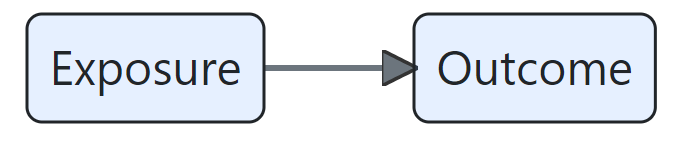
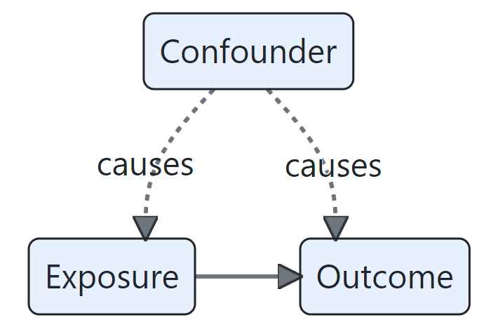
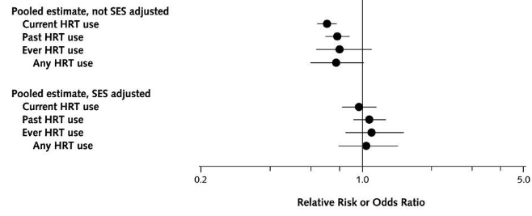
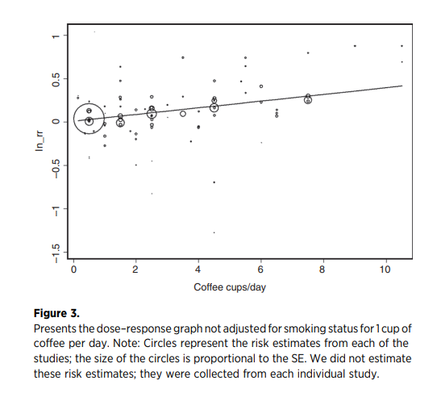
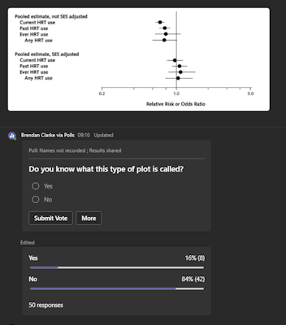
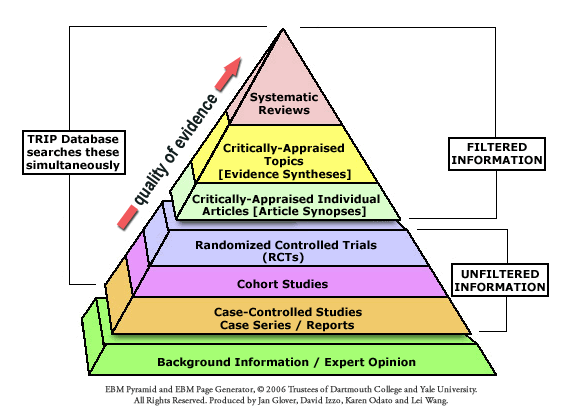

An introduction to EBM (session 1)
Session outline
This session aims to introduce the theory and practice of evidence-based health and care practice.
- we’ll begin with a simple introduction to evidence-based medicine (EBM)
- we’ll then work through a series of exercises
- to show both the problems that EBM solves, and the methods it uses to solve them
- we’ll introduce a mini-guide to finding, appraising, and reading a paper
- then taking what you’ve learned, and making a decision
- then we’ll set up a core EBM topic: the ranking of evidence
- and we’ll finish by looking at the wider EB* family, of which EBM is just one member
Exercises
- E1: find a paper
- E2: the EBM way
- E3: bias, confounding, and effect sizes
- E4: a mini-appraisal
- E5: your EB*
Introduction
The sentence
Evidence-based medicine (EBM) is the:
“conscientious, explicit and judicious use of current best evidence in making decisions about the care of individual patients” (David L. Sackett et al. 1996)
Meaning?
EBM as a set of standards for making decisions in medicine:
- conscientious: using evidence wherever possible
- explicit: naming the evidence that you’ve relied on to make a decision
- judicious: applying standards to judge that evidence
EBM’s domain
- clinical
- individual care
- “current best”
The half-life of facts

Finding papers
E1: find a paper
- go to the Knowledge Network home page
- find a paper about your area of work
- spend three minutes having a look at the paper
- please share one conclusion / takeaway from it in the chat
The takeaway from E1: papers are hard!
- it’s often not very obvious how a paper should change our practice
- complicated, poorly written, annoying…
- fallible
- excessively abstract
- deal with unfamiliar problems
- make many suggestions
Appraising papers
The sentence
Evidence-based medicine (EBM) is the:
“conscientious, explicit and judicious use of current best evidence in making decisions about the care of individual patients” (David L. Sackett et al. 1996)
Reacting against non-systematic approaches to using evidence to make decisions
EBM methods give us a system for using evidence to make decisiosn
- having a system simplifies that journey from evidence to decision
- picking out which research we can trust
- showing us which conclusions we should incorporate into our practice
- subtly, suggesting that we go from decision to evidence, rather than absorbing all the evidence then making decisions
E2: the EBM way
- please reflect on the reasons that you might trust or distrust the paper that you found in E1
- please put a reason to trust the paper, and a reason to distrust it, into the chat
Narrowing the scope of inquiry
- methods
- was the trial randomised?
- were the pre-trial groups similar?
- apart from treatment, were the groups treated similarly?
- was anyone lost to follow-up?
- was there appropriate masking?
- effect
- how large was the effect?
- how precisely was the effect measured?
- relevance
- are the results relevant to my practice?
Ranking of evidence
Three central concerns in EBM
- bias
- confounding
- effect sizes
Bias in general is boring
- AKA “systematic error”
“We define bias as…deviation from the truth” (Boutron et al. 2023)
Specific biases are fascinating

Specific biases are fascinating
- CEBM’s catalogue of biases
- EBM in very broad terms tries to minimise important biases
Confounding is probably the most important bias
What we think is happening

What’s actually happening 
E3: bias, confounding, and effect sizes
- take a look at this plot of coronary artery disease rates:
 - what type of plot is this?
- how would you explain the main finding here in simple terms?
- what might explain the difference between the two groups?
Confounding and coffee

when the potential confounding effect from smoking is controlled for, coffee drinking does not appear to be a lung cancer risk factor (Galarraga and Boffetta 2016)
Thanks to Noora Salem (NHS GGC) for this example
Blobbograms (or forest plot)

Guarding against bias through judgement
- the core EBM methods are specifically designed to guard against bias and confounding
- randomisation ensures that different groups are comparable
- masking ensures fair measurement of effects
- reporting how individuals were followed-up prevents distorting results
- also provide a standard set of tools for expressing effect sizes
- for instance, the use of confidence intervals
- we’ll do this conscientiously by appraising each piece of evidence in the same way
The appraisal
E4: a mini-appraisal
- open the Oxford Centre for Evidence-Based Medicine RCT Critical Appraisal Sheet
- spend three minutes reading through
- please re-report a finding from the paper from E1 using the critical appraisal sheet - put your finding in the chat
From appraisal to ranking
- because EBM introduced methods for appraising evidence, this gave rise to a ranking of kinds of evidence
 - that ranking of evidence will be a core topic for us in session 3
Beyond the care of the individual patient
- EBM originally was about making individual clinical decisions about treatment from published research evidence
- that scope has widened enormously over the past 30 years:
- to non-clinical domains of practice
- to guide the management of groups rather than individuals
- to support decisions about non-treatment questions
- to encompass other types of evidence
E5: your EB*
- in the chat, please give us a few words on these two questions:
- where can you see the conscientious, judicious, and explicit use of current best evidence in your practice?
- are there any areas of your practice that are not evidence-based in this way?
Beyond the individual paper
- just as the scope of EBM has changed over time, we’ll also see how the methods of EBM have changed too
- part of that reflects the widening of scope
- part of that is down to changes in publication practices
- part of that is down to changes in methodological emphasis
. . .
This means that very different practices have flown under the EBM banner at different times and in different places. To avoid contradictions, we’ll endorse a single coherent set of recommendations in this course, drawn from Greenhalgh (2019).
…and beyond the sentence
Evidence-Based Medicine is the integration of best research evidence with clinical expertise and patient values.
(Sackett DL, Straus SE, Richardson WS, et al. Evidence-based medicine: how to practice and teach EBM. 2nd ed. Edinburgh: Churchill Livingstone, 2000.)
Next time!
- in the next session, we’ll look specifically at the most important trial methodology: the randomised control trial
- that will set us up to think more carefully about bias and confounding, particularly as they relate to published evidence
- that will set us up nicely for the next-next session, which is about the core EBM approach in